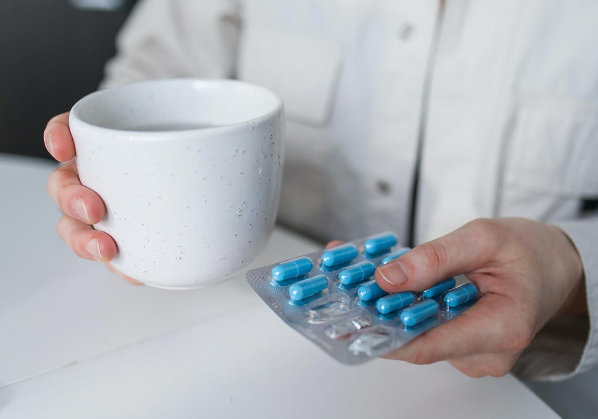

Xenical羅氏鮮排油丸究竟是什麼？
排油丸的英文叫做“Xenical”，最早在1998年上市，中文叫做“賽尼可”，其中的活性成分是Orlistat，奧利斯特；這種成分可以直接作用在腸道內，阻止腸道對於油脂的吸收率高達30%左右。
不同於市面上很多其他減肥產品，是作用於神經系統，從而減少食慾，排油丸是直接作用在腸道內，效果更為直接，所以通常見效也更快。
羅氏鮮「排油丸」減肥效果如何？
在「第11屆肥胖醫學會」中，藥廠公佈了一項德國分公司做的「羅氏鮮肥胖臨床實驗報告」。
經過7個月試驗後，15549位肥胖者，平均減重 11%，最重要的是，這次參與計劃的病患中，罹患第二型糖尿病者佔了1/3，有高膽固醇的則有50%，部分還有高血壓等，這些患者在體重減輕後，治療用藥服用量已減少，甚至不用再服藥。
羅氏鮮在臺灣上市後，造成轟動，一個月銷售達50萬顆，金額約在新臺幣2千萬元左右，當初還逼得藥商不得不決定將原供應亞太地區的「羅氏鮮」，優先運往臺灣。
不過羅氏鮮是否有如此驚人的誘惑力，國內醫師認為不要高興太早﹔Xenical的主成分 Orlistat，是一種長效型的「脂肪分解酵素抑制劑」，可使腸胃無法吸收飲食中的脂肪，減少熱量攝取，此外，須同時配合低油、低熱量的飲食，及運動控制，才能達到理想減重效果。
羅氏鮮有快速減肥的功效，是目前唯一臨床上被證實會排油的產品，只要飲食中含油脂，羅氏鮮就會將三分之一油脂排出，而且排油量會與飲食的油脂含量成正比。由於脂肪吸收減少，所以油溶性維他命有時會吸收困難，需要加強補充。
羅氏鮮「排油丸」排油作用原理

排油丸的任務就是在油脂被小腸吸收之前發揮作用，降低人體對油脂吸收率或吸附腸胃裏的油脂，減少人體對油脂的吸收量。
食物中的脂肪是一種大分子細胞，在被人體吸收之前需要被分解。而起到分解作用的物質就是一種“酶”-“脂肪酶”。當和食物一起吃下的時候，Xenical羅氏鮮排油丸會和脂肪酶發生作用。以至於大約30%的食物中的脂肪會在未被脂肪酶分解和未被人體吸收的情況下直接由腸道排出體外。所以可以幫助你通過燃燒你自己身體的脂肪供給所需能量來達到減肥，控制體重，和減少反彈的目的。
什麼樣的人才能服用排油丸？

排油丸是用來治療超重和肥胖症患者的藥品；因為對於這些患者來說，減少體重對他們的身體健康很有益處，尤其是當肥胖有可能導致他們患上其他疾病的風險時，例如心髒病，糖尿病，心髒病等等。
副作用
羅氏鮮的主要副作用是，脂肪瀉、大便失禁以及緊急頻繁的腸道運動。這是攝入大量油脂的同時服用羅氏鮮才會出現的狀況，大量的油脂同時被排泄出體外，難免會“漏油”，這就是網友分享的放屁噴油的情況。同類產品纖貝麗也有同樣的副作用，這也許是排油丸的共有副作用。
某些營養成是脂溶性的，由於使用排油丸後油脂吸收受限，一些脂溶性維生素如維生素 A、D、E 和 K 和礦物質（如鈣）也容易出現吸收不良。
食藥署提醒大家，若是想維持身體健康與良好體態，建立正確的營養攝取觀念、保持均衡飲食和適當運動，才是最有效的方法。